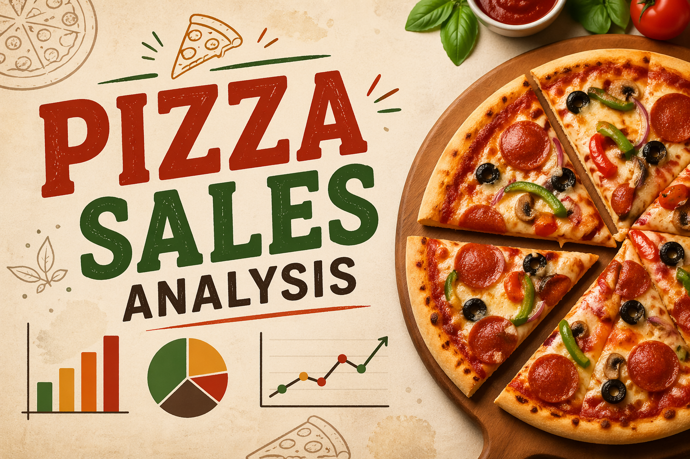
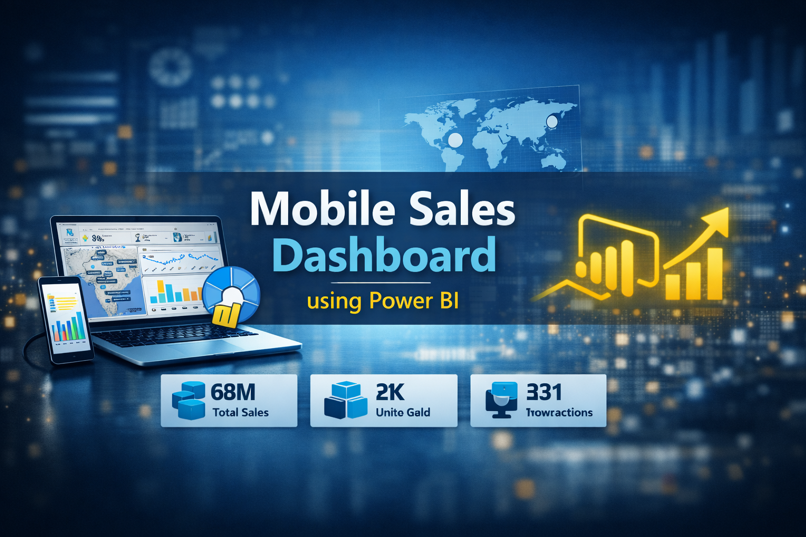

✦ Developed an interactive Excel dashboard to analyse Emergency Room operations. Tracked KPIs such as wait time, patient satisfaction, demographics, and admission trends using slicers and dynamic visuals.

✦ Executed an end-to-end SQL analysis on pizza sales data to extract actionable business insights using joins, subqueries, CTEs, and aggregations.
✦ Performed data cleaning, revenue analysis, top-selling pizza identification, and customer order trend analysis.
View Project
✦ This project is design and develop a comprehensive BI dashboard that provides actionable insights into mobile phone sales. The dashboard was created using Power BI and showcases multiple dimensions of sales performance, including geography, product models, payment methods, and customer ratings.
View Project